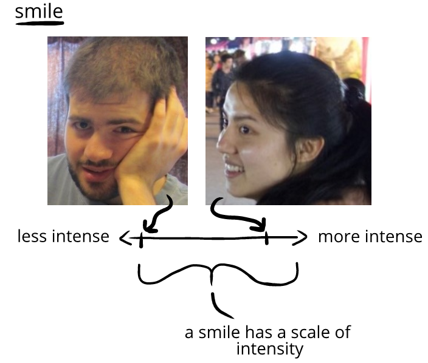
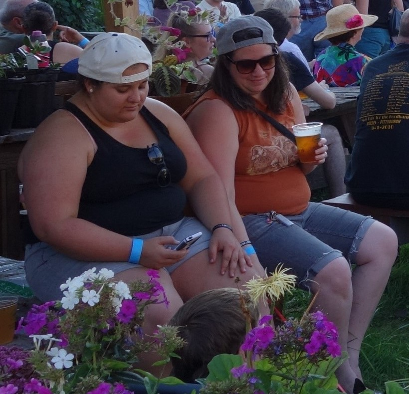

Humor tells express intensity of humor
Humor has an intensity to it, and humor tells convey this intensity. Humor tells can do this because they have low-intensity and high-intensity variations.
This is familiar with smiling. When we feel high-intensity humor, we beam. When we feel low-intensity humor, we give a half-smile. Both beaming and half-smiling are the same humor tell—smiling—only at different intensities:

The woman is giving a broad smile, the man a half-smile. The intensity of the humor tell corresponds to the intensity of their humor.
Sometimes, we only think of humor as high-intensity humor, like belly laughs. But humor can also be made up of low-intensity humor tells too, like in the pair below:

At first, we may not register any humor in the picture above, since no one is laughing. But at the same time, we can see someone is reducing physical tension, loosening, relaxing posture, smiling, touching others, touching self, making effort to spread humor, focusing on present, losing of situational awareness (turning from an event toward a companion), social seeking (turning toward a companion), and so on.
In this case, we’d say both of them are feeling at least low-intensity humor—even though there's no laughing.
Laughing isn't humor. When enough humor tells happen together, it's humor—and while smiling or laughing is often one of those humor tells, they're not always part of humor. We can feel humor, even without smiling or laughing!
This happens all the time, like how we may not smile or laugh as we walk along a low wall (non-normative behavior)—or bob our head slightly to a song as we walk through a store (high energy).
This is often most obvious when we share a glance with a friend after overhearing something odd. We raise an eyebrow and set our face a specific way. In this case, we're social seeking (sharing a glance), making effort to spread humor, focus on present (whatever was on our mind briefly disappeared), loss of situational awareness (we break awareness to glance at each other), non-normative behavior (our facial expressions are distinctive), reducing stress (our glance makes us feel looser), and so on.
In this case, we'd be feeling humor without also smiling or laughing.